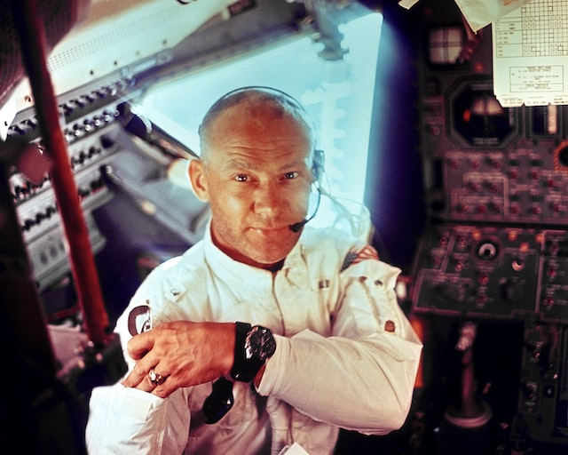

Rendezvous na órbita da Terra:
Como funciona e qual a importância?
Um rendezvous na órbita da Terra ocorre quando duas espaçonaves se encontram em uma órbita comum. Esse tipo de manobra é crucial para missões tripuladas e não tripuladas. O processo começa com o lançamento de uma espaçonave em órbita, seguido por uma manobra de transferência para alcançar a outra espaçonave. Quando as duas espaçonaves estão próximas o suficiente, elas são acopladas e podem realizar operações conjuntas.
O rendezvous na órbita da Terra é importante para a manutenção da Estação Espacial Internacional, missões de exploração espacial e satélites. Permite ajustes em órbitas, corrigindo problemas e prolongando a vida útil dos satélites. É uma manobra crucial para muitas missões espaciais.
Buzz Aldrin
Vale destacar que um dos primeiros astronautas a realizar um rendezvous na órbita da Terra foi Buzz Aldrin, durante a missão Gemini 12 em 1966. Aldrin realizou um encontro bem-sucedido com um veículo alvo em órbita, tornando-se o primeiro astronauta a realizar um encontro bem-sucedido com outro veículo no espaço. Sua contribuição para a manobra foi fundamental para o desenvolvimento de futuras missões espaciais, incluindo a Apollo 11, em que Aldrin se tornou o segundo homem a caminhar na Lua.